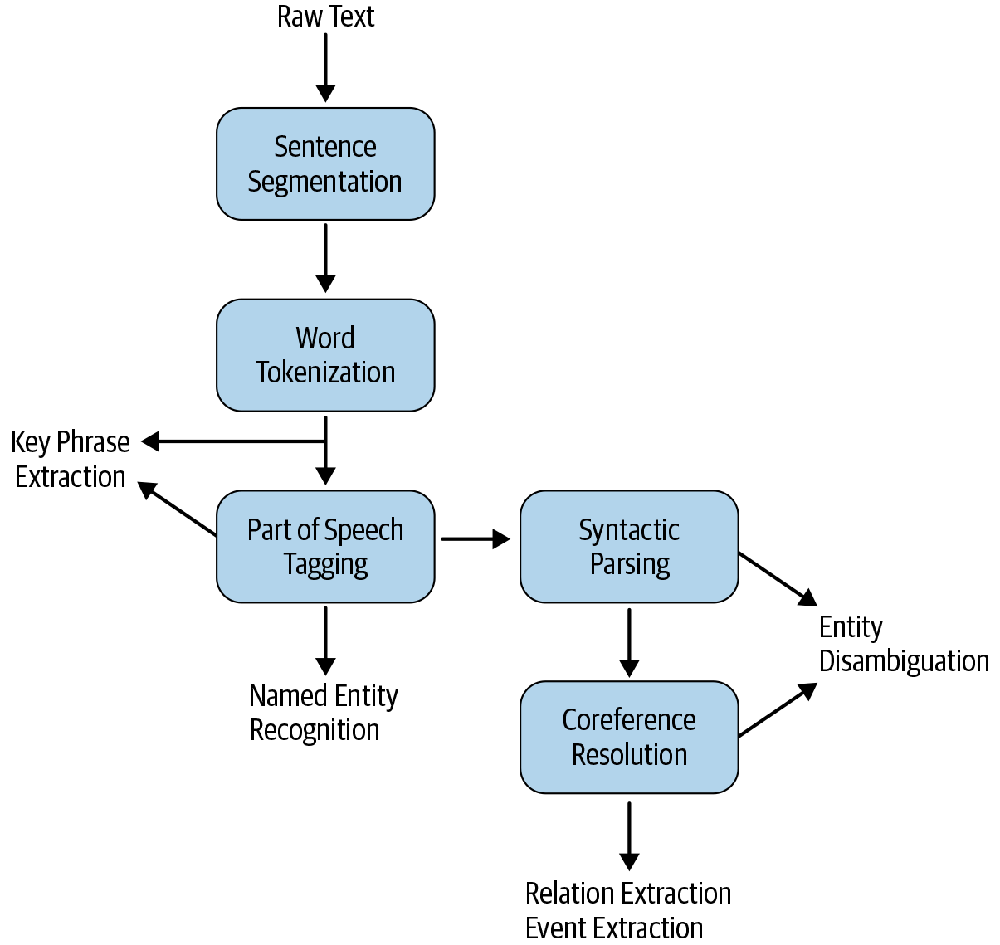

10.2 Information Extraction Pipeline
The usual stages from a document to a filled record.
These notes walk through the lecture slides. The original deck is unchanged; use (slides) on the course hub if you want that PDF.
1. More pipeline than classification
Text classification can live on a bag of words. Information extraction usually cannot. You need to know where sentences end, what the words are, and often how they attach to each other.
Not every IE task uses every step. The figure is a menu, not a mandatory checklist.

2. The main stages
Read the pipeline top to bottom.
Sentence segmentation. Split the document into sentences. A period is not always a boundary (U.S., 3.14).
Word tokenization. Split each sentence into tokens. Contractions and hyphenated names matter later.
Part-of-speech tagging. Nouns, verbs, proper nouns. NER leans on this. A capitalized word at the start of a sentence is not automatically a name.
Syntactic parsing. Who is the subject, what is the object, what modifies what. Relation and event extractors use this structure.
Coreference resolution. Albert Einstein, Einstein, the scientist, and he are the same person. Without this step, you store four entities instead of one.
3. Which task needs which steps
| Task | Typical requirements | Often skip |
|---|---|---|
| Keyphrase extraction | Tokens; some methods add POS | Parsing, coreference |
| Named entity recognition | Tokens and POS | Full parse, sometimes coreference |
| Entity disambiguation / linking | Parse plus coreference, plus a knowledge base | — |
| Relation extraction | Entities plus syntax | — |
| Event extraction | Entities, relations, often time | — |
KPE is the lightest job on the list. Some algorithms still POS-tag first so they keep noun phrases and drop "the" and "of" as standalone keys.
NER needs POS because person and organization names are mostly proper nouns, and because the tagger helps with multi-word names.
Linking and relations sit higher. You first find the mentions, then decide they are the same real-world thing, then decide how two things are related.
4. Errors cascade
IE is only as good as the steps underneath it.
If the sentence splitter cuts a quote in half, the parser sees junk. If the POS tagger calls Apple a common noun, NER may miss the company. If coreference fails, the relation extractor never ties he to Maestri.
When you collect training data or fine-tune a model, write down which pre-processing you used. A model trained on clean newswire will look worse on tweets even if the IE head is the same.
5. How IE is scored
Standard sets report precision, recall, and F1 on spans and labels.
- Precision: of the spans you marked, how many were right.
- Recall: of the spans that should have been marked, how many you found.
- F1: the harmonic mean. One number when you cannot tune for only precision or only recall.
Exact-span scoring is strict. Off-by-one token errors count as misses. That is why tokenization quality shows up in the metric.
6. What to take into a project
- Start from the task, then keep only the pipeline steps that task needs.
- Measure the pre-processors on your text, not only on a textbook corpus.
- Budget time for labeled data. IE labels are spans, not document tags, so they cost more.
Note 10.3 is KPE, the cheapest task on this pipeline. Week 11 is NER.
7. Practice
-
Which pipeline steps would you keep for a keyphrase tagger on product reviews? Which would you skip?
-
Give one example where failed coreference would break relation extraction.
-
A system tags New York Times as
LOCinstead ofORG. Is that a tokenization error, a labeling error, or both? Say why.